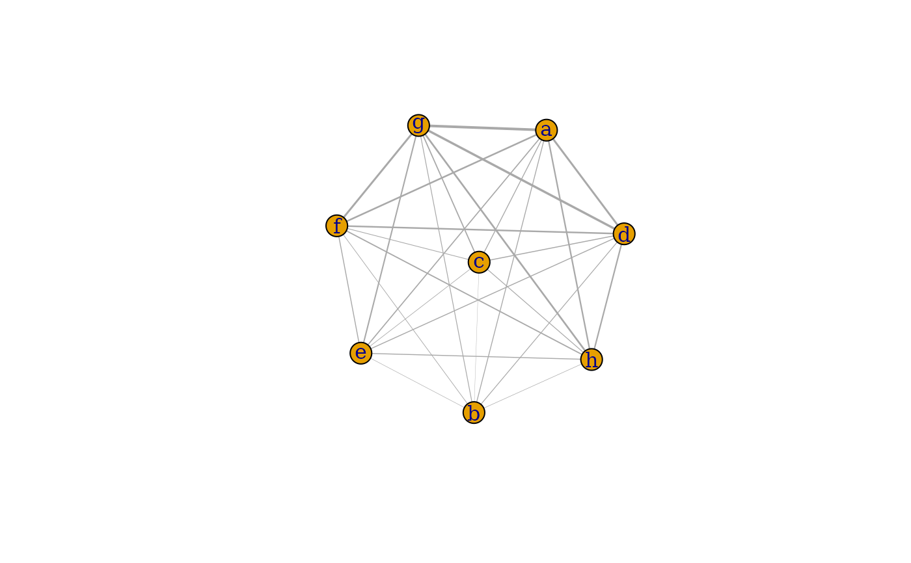
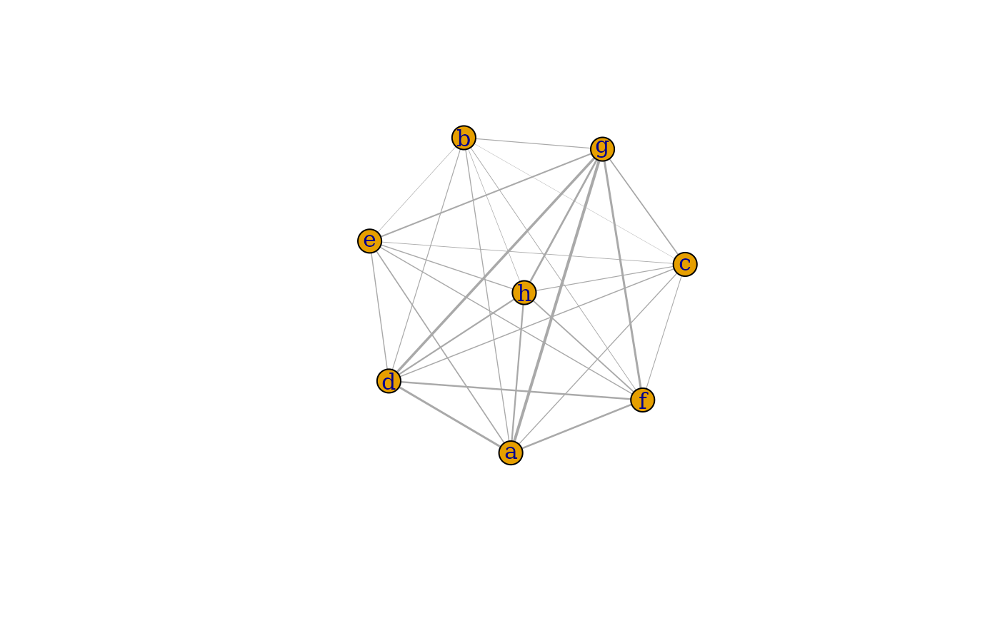
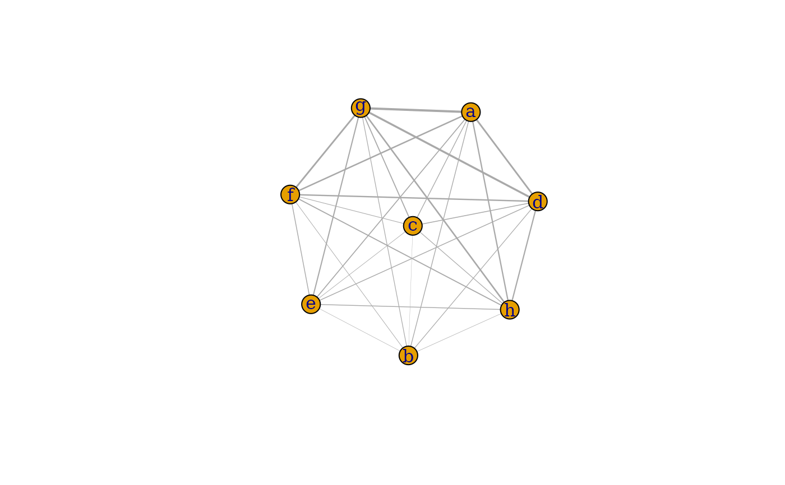
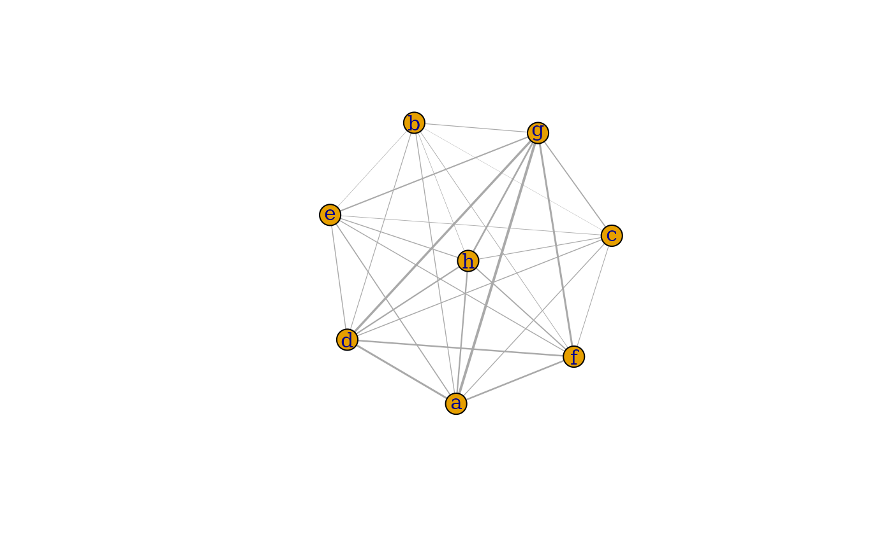

This function takes in a matrix with the predicted proportions
for each spot and returns a heatmap which = plotHeatmap or a network
graph which = plotNetwork to show which cells are interacting
spatially.
Usage
plotInteractions(x, which = c("heatmap", "network"), min_prop = 0, ...)Arguments
- x
numeric matrix with rows = samples and columns = groups. Must have at least one row and column, and at least two columns.
- which
character string specifying the type of visualization: one of "heatmap" or "network".
- min_prop
scalar specifying the value above which a group is considered to be contributing to a given sample. An interaction between groups i and j is counted for sample s only when both x[s, i] and x[s, j] fall above
min_prop.- ...
additional graphical parameters passed to
plot.igraphwhenwhich = "network"(see?igraph.plotting).
Examples
library(ggplot2)
mat <- replicate(8, rnorm(100, runif(1, -1, 1)))
# Basic example
plotInteractions(mat)
### heatmap ###
# This returns a ggplot object that can be modified as such
plotInteractions(mat, which = "heatmap") +
scale_fill_gradient(low = "#f2e552", high = "#850000") +
labs(title = "Interaction heatmap", fill = "proportion")
#> Scale for 'fill' is already present. Adding another scale for 'fill', which
#> will replace the existing scale.
 ### Network ###
# specify node names
nms <- letters[seq_len(ncol(mat))]
plotInteractions(mat, which = "network", vertex.label = nms)

# or set column names instead
colnames(mat) <- nms
plotInteractions(mat, which = "network")

# pass additional graphical parameters for aesthetics
plotInteractions(mat,
which = "network",
edge.color = "cyan",
vertex.color = "pink",
vertex.label.font = 2,
vertex.label.color = "maroon")
### Network ###
# specify node names
nms <- letters[seq_len(ncol(mat))]
plotInteractions(mat, which = "network", vertex.label = nms)

# or set column names instead
colnames(mat) <- nms
plotInteractions(mat, which = "network")

# pass additional graphical parameters for aesthetics
plotInteractions(mat,
which = "network",
edge.color = "cyan",
vertex.color = "pink",
vertex.label.font = 2,
vertex.label.color = "maroon")